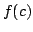
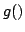

Usage
binaryWriter f
binaryWriter(f, g)
Signatures
binaryWriter: (Byte ())
binaryWriter: (Byte
| Parameter | Type | Description |
|---|---|---|
| f | Byte |
the single-byte write function |
| g | () |
the flush function (optional) |
Returns
Returns the output stream for which  writes the byte and such that  flushes the stream. If g is not given, then flushing the resulting stream has no effect.